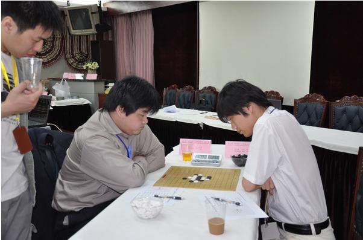
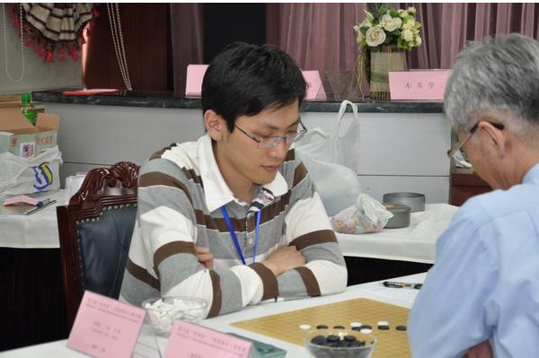
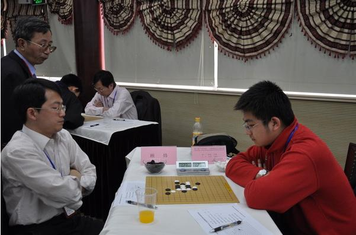
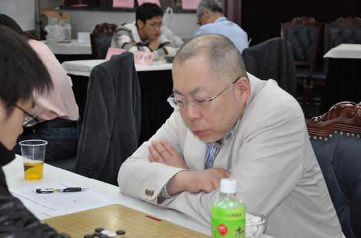
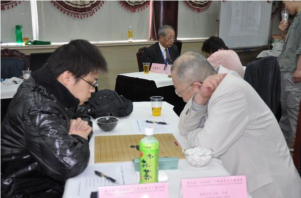
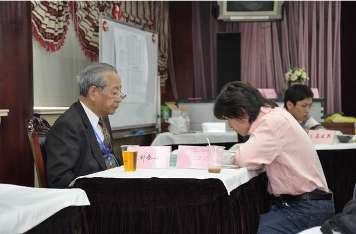

据悉，第六届上海名人邀请赛全部参赛人员已于昨天（2009年4月30日）全部报到。比赛将于今天按计划举行。
第六届上海名人邀请赛的直播链接为http://www.renju-city.com/meijing/meijing/
因为条件限制，此次比赛直播不提供与观众的即时文字交互，敬请谅解。
开幕式将于9：00开始。第一轮比赛将于10:00开始。9：00现场报道开幕式情况。
＝＝＝＝＝＝＝＝＝＝＝＝＝＝＝＝＝＝＝＝＝＝＝＝＝
使用说明：
1、点击界面的列表将动态切换对局
2、可以直接在界面上拆解比赛的后续变化，但不支持后退功能；如须恢复显示，切换对局即可
3、直播界面旨在及时提供比赛相关信息，故界面会随比赛进程不定期更新，对拆解变化不保存、不恢复，敬请谅解
［ 逆刃 于 2009-5-1 8:41:26 时奖励此帖[金币加 20 威望加1］
谢谢沈毅老师
开幕式直播（节选）
－－－－－－－－－－－－－－－－－－－－－－－－－
大家好，现在第六届上海名人赛开幕式已经进行
昨天晚上，全体参赛选手进行了抽签仪式
根据抽签结果，比赛分两个阶段进行
第一阶段12位参赛选手分三组进行小组赛
每组4人，赛三轮，小组赛将在今天结束
5月2日和5月3日将进行四轮复赛
抽签的情况是这样的：
现在棋院领导正在进行讲话，前来参加开幕式的领导、选手和爱好者共有四十人左右
这是第一次采用山口规则的重大五子棋比赛
今年的连珠世界杯锦标赛也将采用山口规则。因此，这次比赛的结果很值得大家关注
现在第一轮的对阵情况已经公布在列表中
第一轮将在10点15分开始
为了保证直播不影响比赛，公布的手数将不和比赛完全同步，敬请谅解
欢迎稍后回来：）
楼上两位为啥头像都一样啊 差点弄混了
都功夫熊猫。。。
噢 原来这样啊
［ 失落刀 于 2009-5-1 13:44:45 时奖励此帖[金币加 20 威望加1］
我记得是威望2可以上传文件。你现在可以试验下了。
威望达到3才可以上传






第一轮直播
＝＝＝＝＝＝＝＝＝＝＝＝
大家好，首先我们来看一下矶部泰山和许斌的对局
矶部泰山开松月，二打
许斌可能考虑到矶部泰山年纪大了，未交换
矶部泰山选择了一个直接攻击的手段，可能是因为许斌是第一次参加这一赛事的缘故吧
因为时间关系，我将先把各个对局发布，请诸位根据自己的喜好选择欣赏
现在有四盘对局已经上传变化，大家似乎都还钟情五手二打。。。
俞满江选择的是他在最近峡月赛中的下法，很考研黑棋的进攻能力
顾炜毫不犹豫的选择进攻来显示自己的实力
至22手，局面黑优
葛凌峰开名月，要求三打
6可能想变通白棋银月一打的形状
至16手，黑稍好
矶部泰山和许斌的对局又进行了两手，许斌似乎在苦苦挣扎
三森的进攻似乎被上届名人俞满江有效的阻挡住了
周可鼎正在逐渐扩大黑棋的优势
许斌下出18手防，期待矶部泰山的妙手
矶部泰山选择了局部进攻，很有气势的拍下了21手
23手按照日本连珠格言“三剑在手无不胜”，矶部泰山应该已经大局已定
矶部泰山先生喝了一口饮料，然后上洗手间休息去了
让我们为顽强抵抗的许斌加油：）
许斌下出了局部最强的八卦形状，期待矶部泰山继续展现攻击手段
葛凌峰逐渐扩大了黑棋的优势
贺茂雪和饭尾义弘的对局终于有了新的进展
黑白在局部都有很大的优势
矶部泰山25手非常漂亮的转身！
三森先生换了一个攻击方向，继续努力着，让我们继续关注
黑棋被白棋切成两块，胜负难料
葛凌峰的黑棋优势到25手已经非常巨大，是否能第一个取胜呢？很值得期待
周可鼎的黑棋到33手已经有一种水到渠成的感觉了
贺茂雪的11似乎把局面导向了平衡
许斌的26手在局部应该是很有效的手段，27手很稳健的进攻
29手的声音很大，看来矶部泰山很有信心拿下这一局
30手许斌无奈的抵抗着
周可鼎继续不愠不火的控制局面
贺茂雪和饭尾义弘的对局继续平稳的发展着
矶部泰山的31手似乎是在防守，但局面上黑棋还是占据着绝对的优势
俞满江选择了28
贺茂雪的15手非常有效率
37手，周可鼎开始寻找胜机
矶部泰山和许斌的对局进行到40手，矶部泰山开始新的计划
矶部泰山选择了实战的41，许斌开始长考
许斌选择了一个棋形上不错的防点
葛凌峰选择了在棋盘左侧建立连接，28应该是防
顾炜似乎没有看到更好的下法，开始和白棋进行交换
周可鼎的对局进行到56手，相信大家都在开始计算黑棋是否有局部杀
贺茂雪和饭尾义弘的对局依旧进展缓慢
矶部泰山开始转移战场
葛凌峰下出了呼应上下的29手，30似乎弱了一点
周可鼎的算清了交换的次序，把战火引向棋盘的左侧
贺茂雪并不急于进攻，21手是白棋要点
许斌终于得到了先手
李一的54手究竟有没有VCF？！
葛凌峰31嵌四，32唯一
第二轮将在14：30开始
大家好,下午的第二轮比赛已经开始
可能因为刚刚吃过午饭的关系，棋局的进展还都比较缓慢
因为人手问题，部分棋局的第五手打点目前不全，敬请谅解
下午的对局，大家都选择了比较平稳的变化，在此预祝他们都能完全的发挥各自的实力，给大家带来精彩的对局
经过上午的第一轮较量，各位比赛棋手都对山口规则有了更深入的认识，在下午的比赛中布局不在局限在RIF规则下的那些定式
如何面对未知局面，是这次比赛的看点
当然，在赛前，各位棋手也无一例外的会对未知的第五手变化做一些必要的研究
现在第二轮已经有两对棋手分出胜负
根据这次比赛的规则，位于B组的仇云飞现在一胜一和，复赛进入A组的机会很大
在这次比赛中采取“在一次比赛中参赛者之间只能有一次对局” 原则，即在预赛比赛过的选手，复赛再次相遇时，复赛成绩按预赛中的成绩计算
无须再次对局
因此，在三轮的预赛中，有理由相信各位选手都会努力争胜
49手葛凌峰提和，矶部泰山同意了
这样，b组的第二个出线名额，要等第三轮结束才能分晓
A组的四个棋手还在激烈的对抗中
转瞬之间风云突变。预赛A组的另外两盘都先后结束了
现在第二轮全部比赛结束
第三轮准备在18：30开始
引用：
原文由 爱下不下 发表于 2009-5-2 11:59:02 :
请问沈毅老师：第六届上海名人邀请赛的赛程是什么样的？小组赛以后再怎么比？
根据预赛结果，12名棋手分AB两组进行复赛
复赛共4轮，AB两组分别统计成绩
A组的第一名将获得本届名人称号
复赛第二轮直播节选
＝＝＝＝＝＝＝＝＝＝＝＝＝＝＝＝＝＝＝＝
复赛第二轮已经开始，稍后会更新棋谱
现在首先得到的是饭尾义弘与许斌的对局，贺茂雪与三森政男的对局
从布局上看都是普通的常见变化
现在比赛还在继续进行，这一轮的变化都比较平稳
贺茂雪下出了在比赛中很少见的一子通三路的变化
优势非常明显
三森没有直接去处理21，而是选择了对攻
俞满江战胜了矶部泰山，我将马上摆完这一局
朱建锋非常精彩的在局部作杀成功
贺茂雪下出了胜负手，期待三森政男在局部创造奇迹
许斌现在的局势很危险
顾现在还只剩三分钟
顾炜在最后只剩二分钟的时间给赢了
39以后，三森开始尝试VCF
54手宣告白棋的崩溃
这时白棋没有太多的时间了
最终三森政男超时了
复赛第二轮的最后一场比赛结束，结果是饭尾义弘战胜了许斌
晚上18：30将继续复赛第三轮的对局，欢迎大家欣赏
为什么没海月老师的照片：（
海月老师排第一呢
 太好了
太好了--------------------------------
复赛第三轮直播节选
---------------------------------------
晚上18：30将继续复赛第三轮的对局，欢迎大家欣赏
大家好，现在第六届经纬杯上海名人邀请赛已经进入复赛第6轮
在前面的5轮比赛中，周可鼎以五战全胜的战绩领先
这一轮他的对手是顾炜。后者是否能阻止周可鼎的连胜势头，大家拭目以待
顾炜经过长考，下出了18手
旋即周可鼎活三进攻
现在黑棋有一套14手的VCF等待顾炜化解
矶部泰山战胜了贺茂雪
矶部泰山战胜了贺茂雪
场内的棋手现在似乎很有默契的都开始长考，请大家耐心等待
仇云飞首先打破了这种沉默
李一开始攻击
现在他们的对局进入了混战状态
顾炜目前还在长考，考虑如何有效的生存下去
目前顾炜积四分，周可鼎积五分，在A组暂列前两名，他们的这场对决关系到最终谁能夺冠
顾炜经过长考终于落子了，他直接挡住了刚才黑棋那套VCF的第一个冲四
周可鼎不紧不慢的团了一个方块
继续形成一个7手的VCF，并且远离22的牵制
顾炜继续苦战
李一下出了28手，把局面搅的更加混乱
双方继续纠缠在一起
三森政男做VCF，饭尾义弘挡在四三点上
三森继续进攻
朱建锋在非常空旷的地方下了一手
经过痛苦的煎熬和反复的演算，顾炜最终投子了
理论上周可鼎已经成为这一届经纬杯上海五子棋名人邀请赛的冠军，让我们向他表示祝贺
三森的嵌四招到饭尾义弘的反击
目前李一前五轮四胜一负，很有可能冲击亚军
三森无力阻挡饭尾义弘的反击，放弃了这一局
现在继续后续变化
61因为时间的关系出现了失误，现在白棋有H12/K9的四四
葛凌峰非常可惜的输了一局
许斌可能出现误算了，36以后认输
如果李一胜出，将向亚军迈进一步
目前李一还有11分钟，仇云飞还有6分钟。最终的棋谱将在比赛结束后发布
复赛第四轮直播
＝＝＝＝＝＝＝＝＝＝＝＝
大家好，复赛第四轮即比赛直播最后一轮已经开始
周可鼎继续大战瑞星
至12手都是教科书似的变化
葛凌峰选择了最复杂的定式变化
周可鼎规避了大型定式的推演
至此，周可鼎以六胜一和的不败战绩获得了“经纬杯”第六届上海五子棋名人邀请赛的冠军
让我们对他表示祝贺
许斌对三森的对局进行到第8手，现在局面理论上是一个黑棋必胜的局面，让我们为许斌加油
两人目前都处在防守状态
仇云飞决定展现一下自己的攻击能力
局部是否能取胜呢？很值得关注
朱建锋活三了
这两盘棋的整体局势正向着对顾炜有利的方向发展
许斌活三进攻
个人认为许斌与三森的对局，黑9下在K6或K7位置攻击会比较容易
饭尾义弘和矶部泰山的对局非常精彩，双方已经几次交换先手
最终投子
现在播出许斌和三森政男的对局
现在许斌还在苦战，让我们为他加油
很遗憾，最后许斌不敌三森政男，38手告负
这次比赛全部结束，周可鼎获得冠军，李一获得亚军；感谢大家欣赏